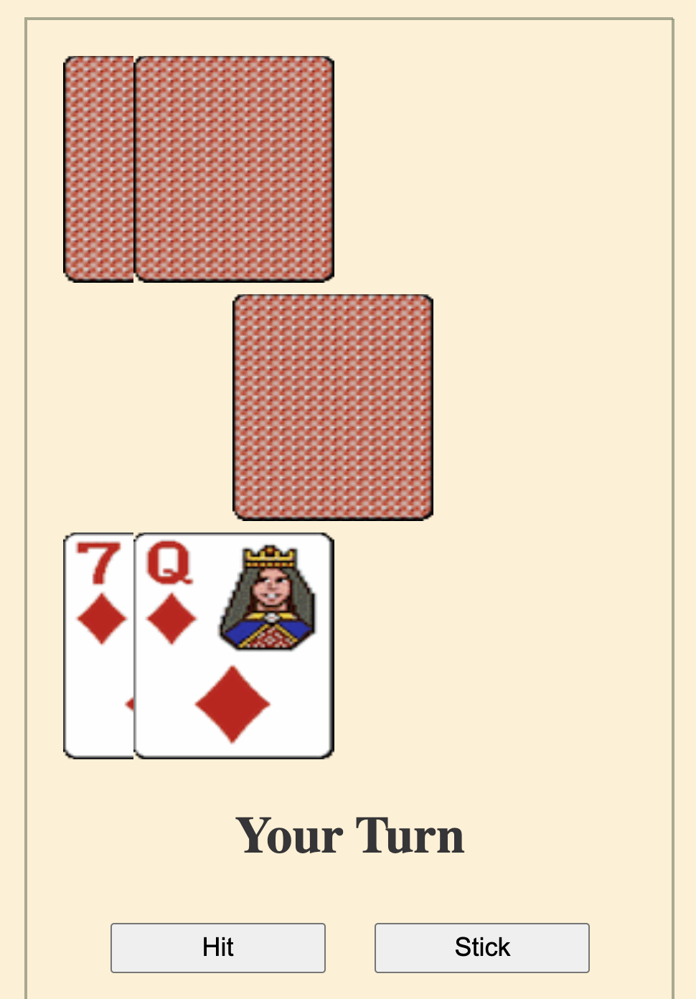
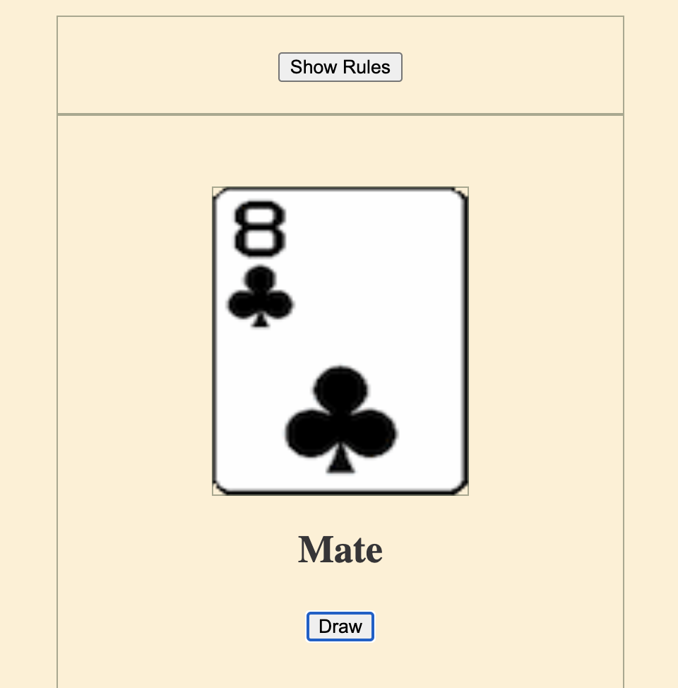

Owen K. Duffy
Check out some of my Projects
Pontoon/21 Online
Got some time to burn? Why not pass some time to play a few hands of Pontoon/21 against the CPU opponent. Check it out!
Kings Online
Ditch the physical cards and embrace modernity with an online version of the classic party game! Gather a bunch of your friends and play a game of Kings using a simulated deck of cards and customisable rules so you can tailor the experience to your own tastes. Check it out!
My Final Year Project

Take a browse of my Final Year Project for my BA.(Mod) from Trinity College Dublin. I undertook a data analysis of bus journey times in Dublin to identify a method of isolating problematic stretches of road where journey times became highly variable and then used the Plotly library to visualise my results. Check it out!